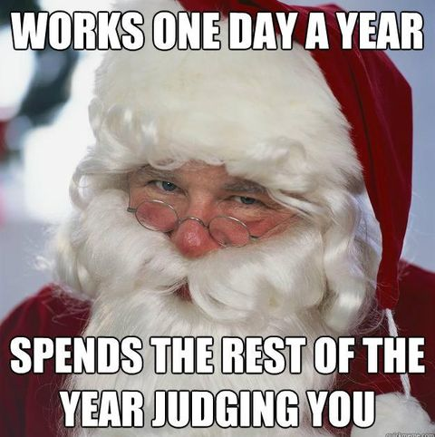

Dette her er også en nettside om jul men en mere boring en. Dette er fordi jeg ikke vet hva jeg skal si fordi jeg saz så mye på den første så jeg bare gir dere dette jule memet isteden for.
Jeg går aldri leg av memes, je elsker og se på reddit og bare se på memes. Men fordi jeg pratet så mye om jul i stad føle jeg at vi kunne ha en liten quiz. Eller mer som noen spørsmål om va du føler om jul. Så da kan vi starte bare svar hvis du har lyst til du trenger ikke.